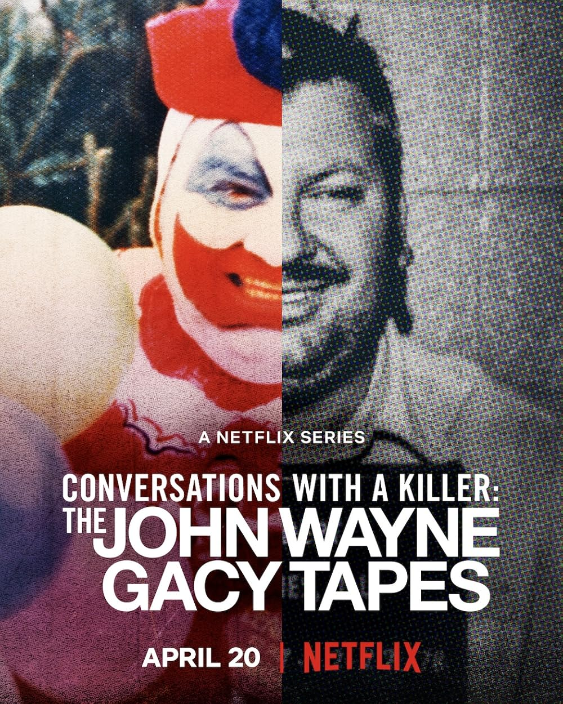

Pe acest site vei găsi recomandări personalizate de filme și seriale, în
funcție de genurile preferate, producțiile care ți-au plăcut deja sau actorii tăi favoriți.
CineVerse te ajută să descoperi rapid titluri noi, potrivite gusturilor tale, fără să
pierzi timp căutând printre sute de opțiuni.
Comedies
Horror
Romance
Drama
Thriller
Animated
Psychological
Action
Indiferent unde te afli, CineVerse îți oferă recomandări adaptate
preferințelor tale, astfel încât să descoperi mereu următorul film sau serial care te
va captiva.
Experiența unică a marelui ecran
Evenimente
—
Movie Night
—
Serial Marathon
—
Documentary Evening
—
Classic Cinema Night
Recomandări pe zile
Structura săptămânală a recomandărilor CineVerse
Perioadă
Zi
Temă principală
Exemple
Zile lucrătoare
Luni
Top filme pe genuri
Acțiune, Dramă, Thriller
Marți
Seriale în trend
Crime, Mini-serii
Miercuri
Recomandări după actori
Michael B. Jordan, distribuții similare
Joi
Documentare
True Crime, Istorie
Vineri
Must-Watch ale săptămânii
Lansări noi & producții premiate
Weekend
Sâmbătă
Maraton cu prietenii
Seriale pentru binge-watching
Duminică
Clasice & filme premiate
Oscar picks, filme de festival
Programul este actualizat în funcție de lansările recente și tendințele din streaming.
Anunțuri
Nu avem nimic de anuntat, doar a trecut ceva
vreme de la ultimul anunț și ne-am gândit să mai scriem ceva pe aici.
No more Covid!!!!
Am adăugat un nou update
Am adăugat un nou update
Am adăugat un nou update
Am adăugat mai multe genuri de filme.
Nu avem nimic de anunțat, dar ne era dor de voi.
Am adăugat o secțiune pentru documentare
Un an nou fericit!
Misiune
Misiunea CineVerse este de a transforma alegerea unui film sau a unui serial într-o experiență
simplă și plăcută. Ne propunem să oferim conținut clar, bine structurat și actualizat, care să
reducă timpul pierdut căutând printre sute de titluri disponibile pe platformele de
streaming. Prin selecții atent organizate, topuri tematice și analize scurte,
ne dorim să construim un spațiu de încredere pentru pasionații de cinematografie.
„Cinemaul este una dintre cele mai frumoase forme de povestire vizuală."
Popularitatea platformei în rândul utilizatorilor:
Genuri disponibile
28 genuri și subgenuri
Actualizare
Săptămânală
Pentru informații suplimentare despre filme, poți consulta
IMDb.
Există și site-uri care realizează clasamente cu platforme de streaming gratuite.
Un exemplu este
Best Free Streaming
.
Must-Watch
Film recomandat: Sinners
Sinners, cu Michael B. Jordan în rol principal, este un thriller dramatic cu
tensiune psihologică și alegeri morale grele.
Notă pe IMDb: 7.5/10.
Popularitate în rândul utilizatorilor:
Dacă îți plac producțiile intense și personajele complexe, acesta e un must-watch.
Sinners
Serial recomandat: Snowfall
Snowfall urmărește ascensiunea lui Franklin Saint în Los Angelesul anilor '80, pe fundalul
exploziei epidemiei de crack.
Notă pe IMDb: 8.5/10.
Nivelul de popularitate în acest moment:
Recomandat dacă îți plac dramele realiste, cu ritm alert și tensiune constantă.
Documentar recomandat: Conversations With a Killer: The John Wayne Gacy Tapes
The John Wayne Gacy Tapes este un documentar true crime care explorează psihologia
unuia dintre cei mai cunoscuți criminali în serie din istoria SUA,
prin înregistrări audio originale realizate înainte de execuția sa.
Notă pe IMDb: 7.2/10.
Popularitate în rândul utilizatorilor:
Dacă ești pasionat de true crime și psihologie criminală, acesta este un
must-watch.

Conversations With a Killer: The John Wayne Gacy Tapes
Despre CineVerse
CineVerse este un ghid online de filme și seriale dedicat pasionaților de
cinematografie care își doresc recomandări relevante și actualizate constant. Aici găsești
recomandări personalizate în funcție de genuri, actori preferați, producții
similare sau tendințe din streaming. Fie că ești în căutarea unui must-watch
intens, a unui serial pentru binge-watching sau a unui documentar inspirațional, platforma
îți oferă selecții clare, topuri tematice și informații esențiale pentru a alege rapid ce
merită urmărit.
Recomandări pe categorii
Alege categoria preferată și găsește următoarea poveste care te va captiva.
Filme
Alege un film în funcție de starea ta: comedie, thriller, dramă sau acțiune. În fiecare
listă găsești titluri similare cu ce ai mai urmărit.
Acțiune
Aventură
Comedie
Dramă
Thriller
Horror
Mister
Crimă
Romantic
Sci-Fi
Fantasy
Animație
Familie
Război
Western
Musical
Psihologic
Teen
Adaptări după cărți
Remake-uri
Sequel-uri
Prequel-uri
Filme premiate
Filme de festival
Clasice
Filme europene
Filme asiatice
Filme românești
Seriale
Descoperă seriale pentru binge-watching, thrillere intense sau producții premiate.
Categorii populare:
Crime & Mystery
Drama
Sci-Fi
Fantasy
Teen
Comedy
Mini-serii
Thriller psihologic
Istoric
Political drama
Documentare
Descoperă documentare captivante care abordează subiecte reale și povești impresionante.
True Crime
Istorie
Știință și tehnologie
Biografii
Natură și mediu
Întrebări frecvente
Cum sunt alese recomandările?
Recomandările sunt organizate pe genuri, tendințe actuale, popularitate și preferințe tematice.
Pot găsi recomandări în funcție de actorii preferați?
Da!
Includeți și documentare?
Desigur. Avem o secțiune specială pentru documentare: true crime, istorie, știință și biografii.
Unde pot viziona producțiile recomandate?
Site-ul oferă sugestii și informații. Platformele de streaming pot varia în funcție de disponibilitate.


{kind=link}
{kind=link}
{kind=link}
{kind=link}